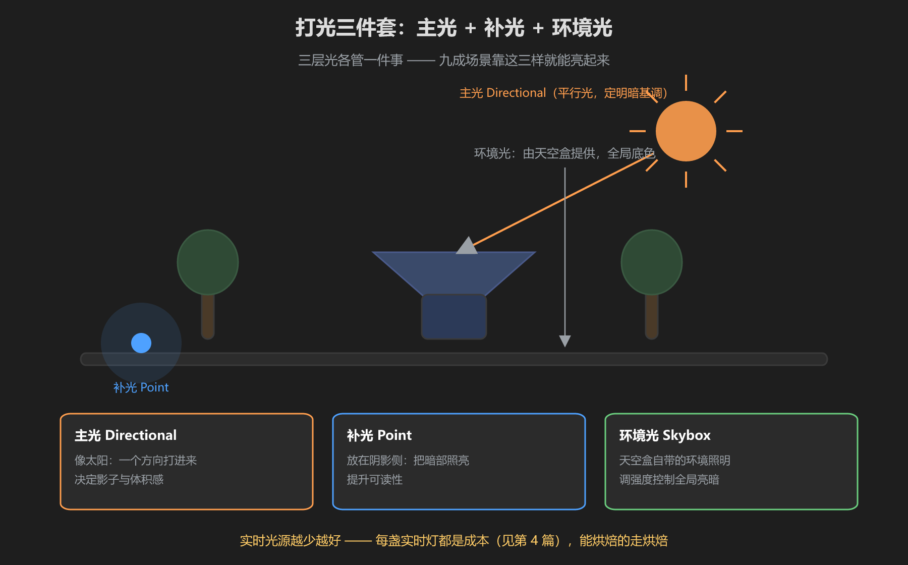
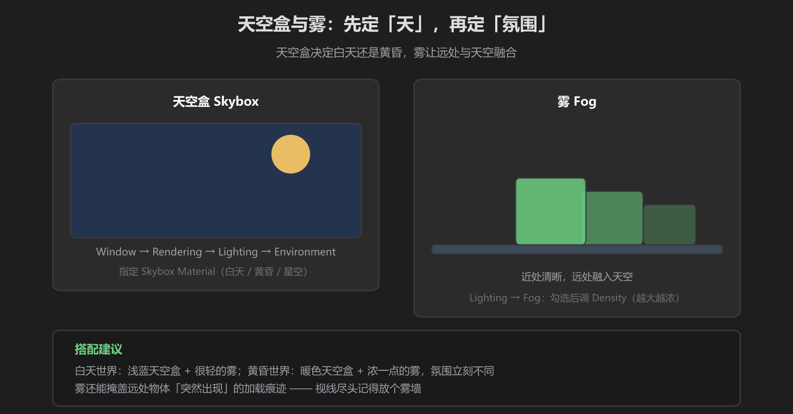

第 3 篇：光照与氛围 — 让场景「亮起来」
灯光决定一个世界的气质。本篇教打光三件套（主光/补光/环境光）、天空盒与雾，再简单介绍 URP 后处理 —— 完整烘焙细节见《渲染教程》。
1. 打光三件套

图：主光 Directional + 补光 Point + 环境光，三层各管一件事
| 角色 | 灯类型 | 管什么 |
|---|---|---|
| 主光 | Directional Light | 像太阳：方向、影子、明暗基调 |
| 补光 | Point Light | 放在阴影侧，照亮暗部、提升可读性 |
| 环境光 | 天空盒自带 | 全局底色，调强度控制整体亮暗 |
实时光源越少越好：每盏实时灯都是一笔渲染成本（见第 4 篇）。主光一盏 Directional 就够，其余补光用完后转烘焙，别让场景里挂满 Point Light。
2. 天空盒：先定「天」

图：天空盒定白天/黄昏，雾让远处与天空融合
操作路径：Window → Rendering → Lighting → Environment，把 Skybox Material 换成你要的天空盒材质（项目里有白天/黄昏/星空可选）。天空盒不只是背景 —— 它还是环境光的来源，换一个天空盒，整个场景的亮度和色调都会变。
3. 雾 Fog：氛围利器
同一个 Lighting 面板里，勾选 Fog 并调 Density（越大越浓）。雾的用处：
- 远处物体与天空融合，画面更统一、更有氛围
- 掩盖远处物体「突然出现」的加载痕迹（VRChat 世界加载是分块的）
- 白天世界用轻雾，黄昏/夜晚世界用浓一点的雾
4. URP 后处理 Volume（注意性能）
URP 里通过 Volume 做后处理：GameObject → Volume → Global Volume，在 Profile 里加 Override。常用三个：
- Color Adjustments：色彩分级，调对比度/饱和度，定场景色调
- Bloom：泛光，让发光物（火把、霓虹）亮起来 —— 阈值和强度别拉满
- Depth of Field：景深，虚化背景 —— 慎用，VRChat 里玩家随时走动，大范围景深容易头晕
性能准则：后处理是全屏计算，每加一个效果都是成本。VRChat 世界建议最多 2-3 个轻量效果，别把景深和体积雾全开。每次改完用 Profiler 看一眼帧率。
5. 烘焙光照（简单说明）
静态物体（地面、墙、道具）的光影可以预计算：把灯标记为 Baked，物体设为 Static，然后 Window → Rendering → Lighting → Generate Lighting。烘焙后光影存进光照贴图，运行时不消耗性能 —— 这是 VRChat 世界性能合格的必经之路。
详细玩法看《渲染教程》：本文只负责让你「知道有这回事」。烘焙分辨率怎么调、混合灯怎么配、为什么烘焙后变暗，全部在《渲染教程》第 3 篇。
学前检查清单
- 能用打光三件套把场景照亮
- 会换天空盒、开启雾并调整浓度
- 认识 URP Volume，能加色彩分级和泛光
- 理解烘焙的基本流程（Static → Baked → Generate Lighting）